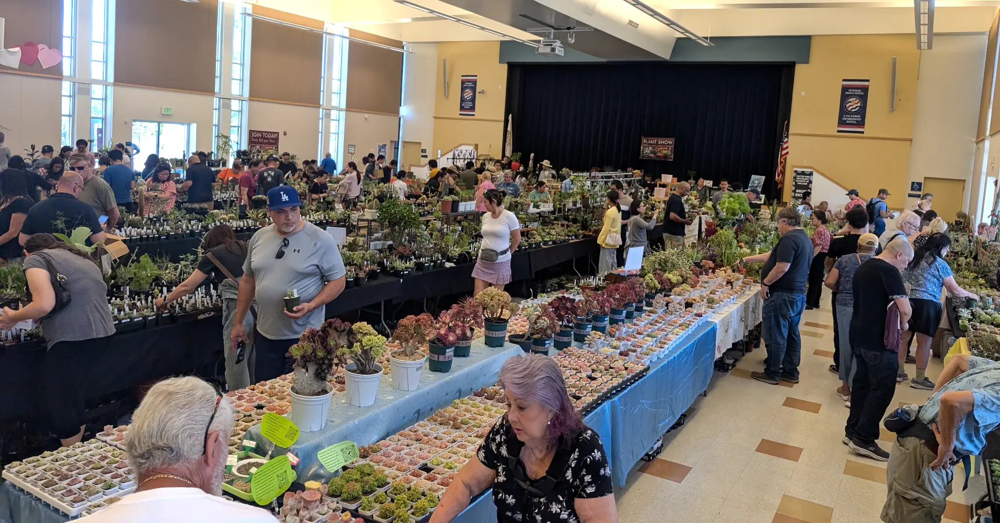
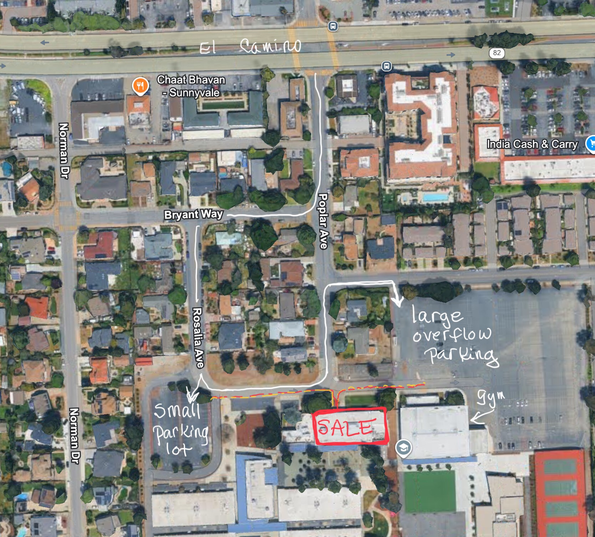
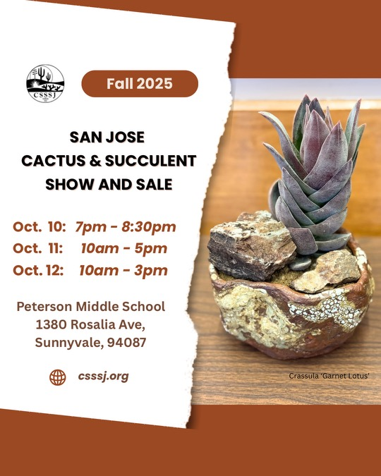

Fall 2025 Show and Sale
WHERE & WHEN |
VISITOR TIPS |
HOW TO HELP |
SHOW-ENTRY RULES

What?
A three-day extravaganza of plant show and plant sale.
Free and open to the public — bring a friend and a box!
Spectacular plants on display will compete for your votes,
while a wide variety of cacti and succulents, along with
handcrafted pottery and assorted accessories, will be up for
sale.
Featuring
-
Exceptional plants on display for our plant show. See
a stunning variety of plants carefully combined with pottery
that makes them look their best!
-
Rarities. Plant vendors selling unusual and rare
species of succulents & cacti you can’t buy in stores.
-
Hand-made pottery selection. Local vandors will be
selling their beautiful and ever-evolving handcrafted work.
-
Expert growing advice. The vendors who raised the plants from
seeds and pups will be there to answer your questions and
provide suggestions.
-
Plant Hotel. Save your arms, and drop your full boxes off with
us until you're ready to check out.
-
A worthy cause. Proceeds support the Cactus and
Succulent Society of San Jose’s monthly programs and further
our mission of community, education, conservation and
propagation.
Where and When?
The Place
The Show and Sale will take place at
the Peterson
Middle School in Sunnyvale.
(See Visitor Tips, below, for
notes on additional parking.)
The Times
Friday, October 10th through Sunday, October 12th.
Members-Only Early Access
Members will have early access on Friday, from 6:30pm–7pm, and Saturday, from 9am–10am.
General Access
Doors will be open to the general public from 7pm–8:30pm on
Friday, 10am–5pm on Saturday, and 10am–3:00pm on Sunday.
Visitor Tips
-
Saturday mornings tend to be extremely busy! If If you
don’t like crowds, you might want to wait until after 2pm, or
Sunday.
-
The doors will not open early.
-
Bring your own boxes — while we will have some on-site, bringing
your own will spare you from having to hunt for the one that's
“just right”.
-
You may want to take advantage of our Plant Hotel (see its
information page)
to hold your plants while you continue shopping. Be sure to
hang on to the numbered tags you're given, so you can
retrieve your plants.
-
Pets, in particular dogs, are not allowed. (Sorry. It’s not
that we don’t love them. It’s just that it’s safer for
everyone if they stay home, and in any case, school rules
forbid themt.)
-
To make shopping safer and more pleasant, the aisles will be
wider than in pre-pandemic days.
-
The wider aisles notwithstanding, while you’re welcome to
bring your cart to help transport all of your purchases,
please keep said cart out of the aisles themselves.
-
For faster checkout, please plan to pay by debit or credit
card. Our systems support contactless payment, including Apple
Pay and Google Pay. Unfortunately, we are unable to take
checks. Cash is acceptable.
-
You can sign up for CSSSJ membership at the Show and Sale,
as well
as online.
-
In addition to the small parking lot, you can use the large
overflow lot adjacent to the gym.

How Can I Help?

Thanks for asking! There are several things you can do
before and during the event.
-
Volunteer! If you’re a
member, please consider volunteering. You get to interact
with customers, as well as fellow club members, in a fun
environment. You also earn $10 in Show Bucks, discounts
usable with any purchase, for each Volunteer slot you fill.
-
Spread the Word! Point your friends at our on-line
resources: our website, as
well as at the
club’s Facebook
and Instagram
pages.!
What Are The Rules For Entering The Show?
For the complete and official set, see
the PDF version. You can also
download a printable page of tags.
Division tables omitted, the show rules are as follows:
Exhibitor Classifications
-
Novice: You have not won a total of 50 first-place
ribbons in previous CSSA-affiliated shows, and have been
competing for less than 5 years, or are under 18.
-
Advanced: You have won more than 50 blue ribbons,
and are not a large commercial seller.
-
Open: You have won 100 or more blue ribbons or are
a commercial seller of Cacti or Succulents, earning a
substantial income from the sale of plants.
Set-up and Take-out
- Plant Entry is Friday, October 10, 2025, 4pm to 8pm.
-
The show will open from 9am–5pm Saturday, October
11th, and 9am–noon Sunday, October 12th.
-
All entrants must register their total entries in the
show registrar, at the info table, prior to placement
on tables.
- Plants must remain for the entire show.
- Judging will be on Saturday Morning.
- Plant take-out time is Sunday, October 12th, from noon to 4pm.
Show Rules
-
You must be a current member of CSSSJ or another CSSA-affiliated club.
-
No field-collected plants may be entered into the show
and sale.
- No Lophophora, or other illegal plants.
-
Exhibits should be marked with the owner’s name not
visible to the judges. Exhibitors are responsible for placing
entry cards with exhibits prior
to the judging. All judges’ decisions are final, and the
show committee decisions are final.
-
Awards and exhibits must remain until the end of the show:
noon on Sunday, October 12th.
-
The CSSSJ and the show committee will not assume
responsibility for the loss or injury of property.
-
The show committee reserves the right to move or adjust
plants, categories, and displays to improve or facilitate a
better show.
-
All commercial growers or vendors in the Show are
encouraged, but not required. to enter either a display or a
minimum of 10 plants in the Open class.
-
Inch measurements, as indicated in the show categories,
refer to the interior diameter of the pot.
-
Plants with 50% or more Variegation, Crest, or Monstrose
may only appear in such categories except for variegation in
Gasteria and Sansevieria.
-
Plant stands may only be used in the Bonsai class or with
plants that cascade below the bottom edge of the pot. For
odd-shaped pots, size is determined by adding the length and
width together and dividing by two.
Divisions
- Cacti
- Succulents
- Arrangements, Displays, & Allied Interests
Awards
- First-, second- and third-place ribbons will be awarded in each division from 1 to 3.
- First place winners receive a choice of a pot or Showbucks.
{kind=link}